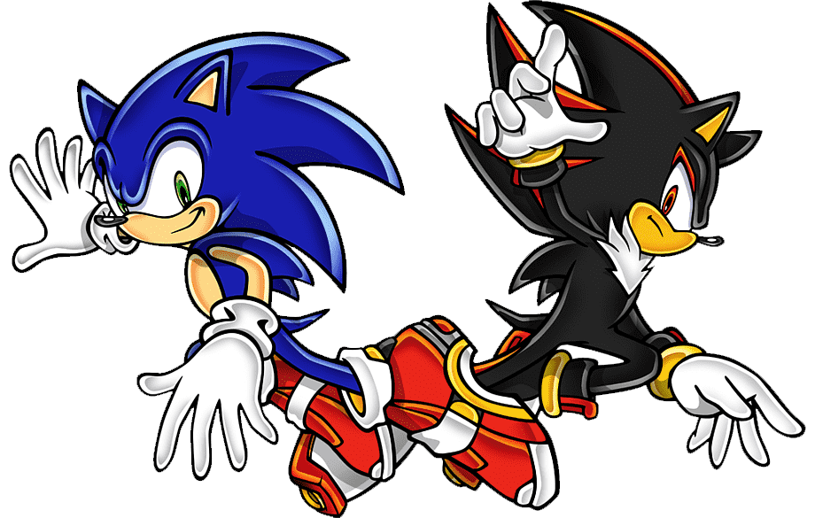

Welcome to the second game of the Adventure Saga!
To celebrate the 10th anniversary of our hero... We will welcome you with a brand new game full of wonderful features that will make the game experiences a thousand times better than the previous one.
The game will now present you two different point of views of the main story. You will be able to decide the fate of the world! Will you save it? Or are you going to conquer it?
Whatever it is, it's you who will determine the future... or not?
We will be visited by characters from the previous game such as Knuckles, Tails, Amy, Eggman and even The Chao!
If you wish to know more about the game we recommend you to stay on the page and keep reading!
Here is the trailer of the game:
Story Select
In the hero story we will be greet by our main heroes: Sonic, Tails and Knuckles as playable characters. With the constant company of Amy, of course.
Some time has happened since our last interaction with our blue hedgehog, and long with it some
troubles!
It looks like the Guardian Units of Nations ( G.U.N ) have trapped Sonic for no apparent reason, and
just for this time we must defy the autorities and find out what's going
on
Here's the situation from the words of Sonic himself:
I'm Sonic--Sonic the Hedgehog! Some military troops suddenly showed up, saying they were looking for me. It looks like they might be taking me for a ride somewhere. Hey, what's this? Handcuffs?! Wait a minute, what're you talkin' about? I'm not a deserter from any military facility! I thought it might be some kinda joke, but this isn't funny. I gotta get outta here!
Meanwhile Tails knows that Sonic is in trouble and is planning to go and save Sonic.
My name is Miles Prower, but everyone calls me Tails. I was watching TV, and just happened to catch the news. I was shocked to see Sonic on TV. Sonic was arrested for something really terrible, which isn't like Sonic. I couldn't believe it was true, so I hopped in my new Tornado, and headed straight for Prison Island. And guess who I ran into. Eggman. He's up to his evil ways again, chasing Amy! That can't be good... Okay, time to break out the new Tornado and save Amy! Tornado Transformation!
As for our third hero, Knuckles, he seems to be having problems with the Master Emerald!
I'm Knuckles the Echidna. Just call me Knuckles. Once again, the Master Emerald was stolen from Angel Island. The thief turned out to be this know-it-all bat-girl of all things. When that bat-girl was within my reach, who do you think shows up? Yep, that's right. Eggman. He came just in time to spoil my plan, and even tried to take the Master Emerald! I managed to break the Master Emerald into pieces before Eggman managed to escape. Now I have to find the pieces. That bat-girl is after the pieces as well. I have to collect them all and put the Emerald back together quickly!
In the Dark Story you are going to help Eggman build his empire along with two new characters: Shadow The Hedgehog and Rouge The Bat.

This story begins with Dr. Eggman infiltrating Prison Island in search of the Ultimate Life Form
A.K.A. Project: Shadow, a weapon created by his grandfather, Gerald Robotnik.
He finds the
"weapon" inside a capsule and by using a Chaos Emerald (and the password M.A.R.I.A.), he soon
discovers that the weapon is a male hedgehog. The doctor initially mistakes Shadow the Hedgehog for
his enemy Sonic the Hedgehog, and nearly fights him. Then, Shadow proves himself by defeating the
military guard fighter. After Shadow defeats him, he leaves, heading for Space Colony ARK and tells
Eggman to bring more Chaos Emeralds and meet him on the ARK.
I'm doctor Eggman, the greatest scientific genius of the world! By accident, I found my grandfather's diary. In it, he describes a mysterious top-secret weapon he was working on called "Project Shadow". The diary looked like it was sealed inside the military research facility when it was shut down over fifty years ago. What a waste of good research! The legacy of the greatest scientific mind in the history of the world, Professor Gerald; that's my grandpa! I might as well get some use out of it
Shadow The Hedgehog decides to help Eggman on his mission due to some problems he had in the past with the military, and because he's the one who freed him from the capsule.
I'm Shadow the Hedgehog, the one and only ultimate life form, awakened from a deep sleep that lasted over fifty years. Doctor Eggman, the grandson of my creator, Professor Gerald, has freed me. The Doctor awakened me, and for that, I have granted him a wish. First, let me show you the true power I possess. In ten seconds, I was able to destroy the military hardware like it was a toy.
Rouge The Bat is looking to steal the Master Emerald from Angel Island, but is interrupted by its protector. Ending up with the Emerald to break into pieces.
My name is Rouge the Bat; better known as the treasure hunter Rouge. I just love jewels, and cannot seem to get enough of them. I found this very valuable Master Emerald, but... this annoying echidna has been following me. He's so persistent. Moreover, this strange old man with a weird looking mustache tried snatching it from me! But before that could happen, it was shattered into pieces. Oh, look what you've done! Now I have to find and collect all of the pieces!